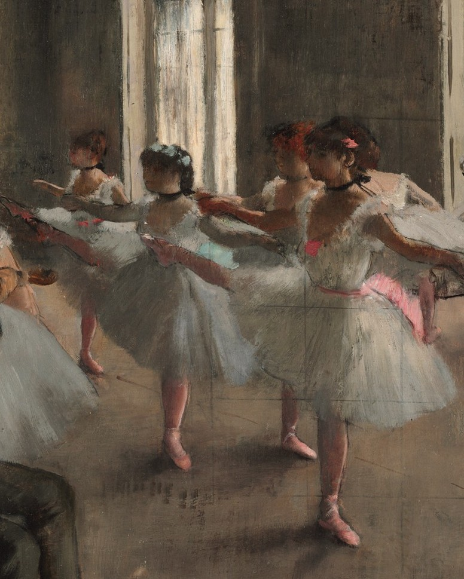
A whole stairwell, painted out. Here's what he kept.
Swipe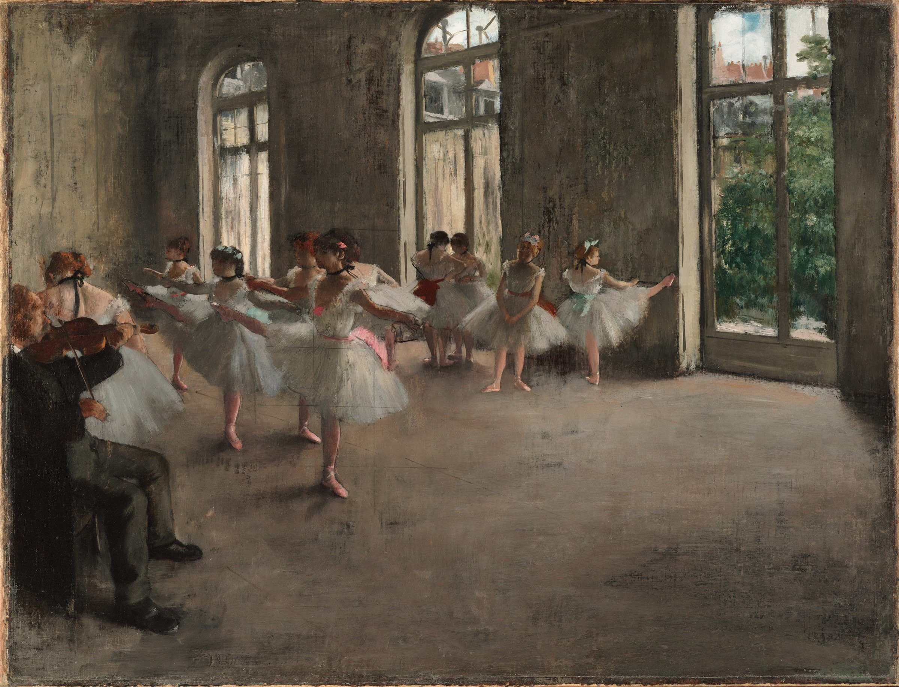
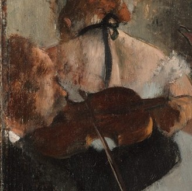
Rehearsals were kept in time by a lone violinist. Degas shoves him into the corner, cut by the frame. The light goes to the girls instead.
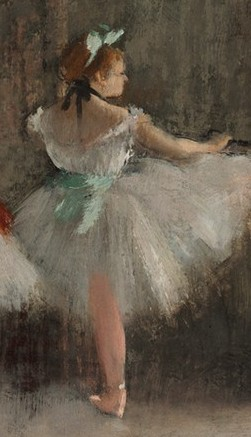
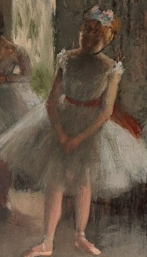
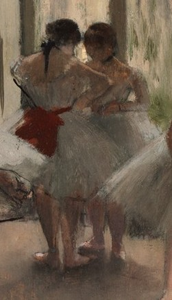
Opéra pupils, mostly poor, who started at seven or eight.
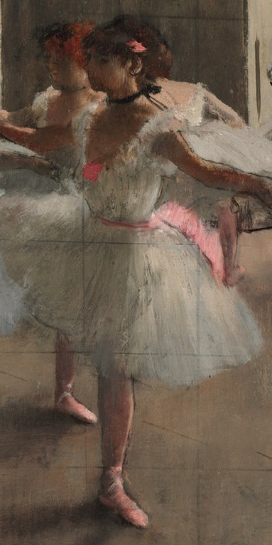
Fogg · detailRich subscribers, the abonnés, bought access backstage. Historians describe many of them preying on the young dancers.
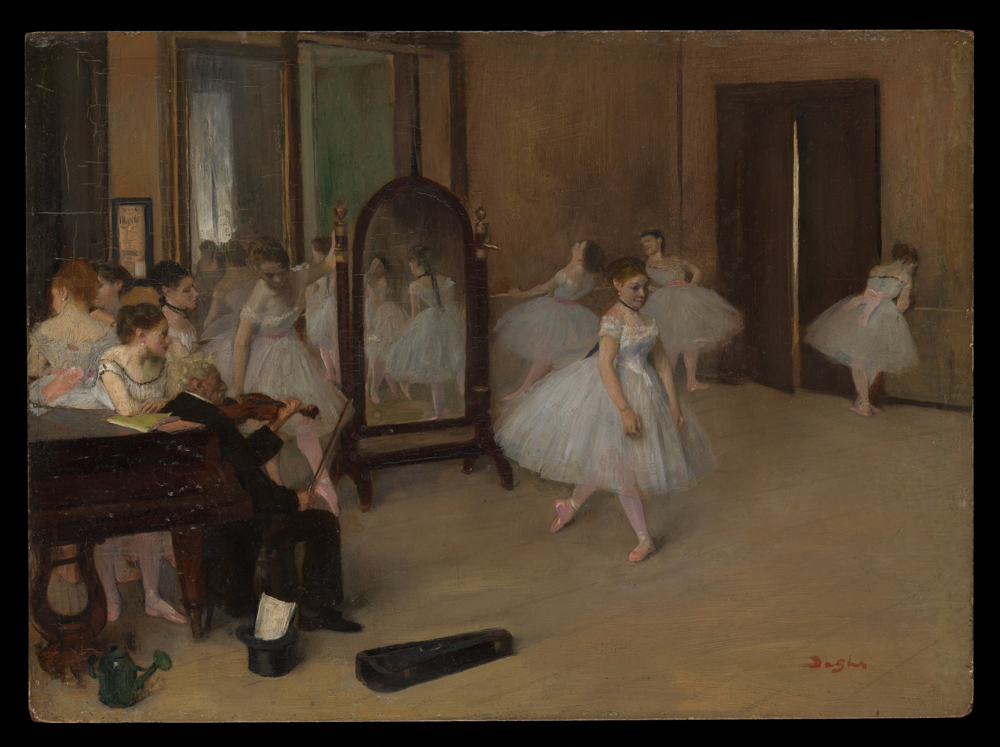
CompareThe Dancing Class, c. 1870 · The Met
Early on, his dancers posed in his studio. Rooms like ours were assembled from drawings, models and memory.
A world of pink and white, of female flesh in lawn and gauze.Edmond de Goncourt · Journal, 1874
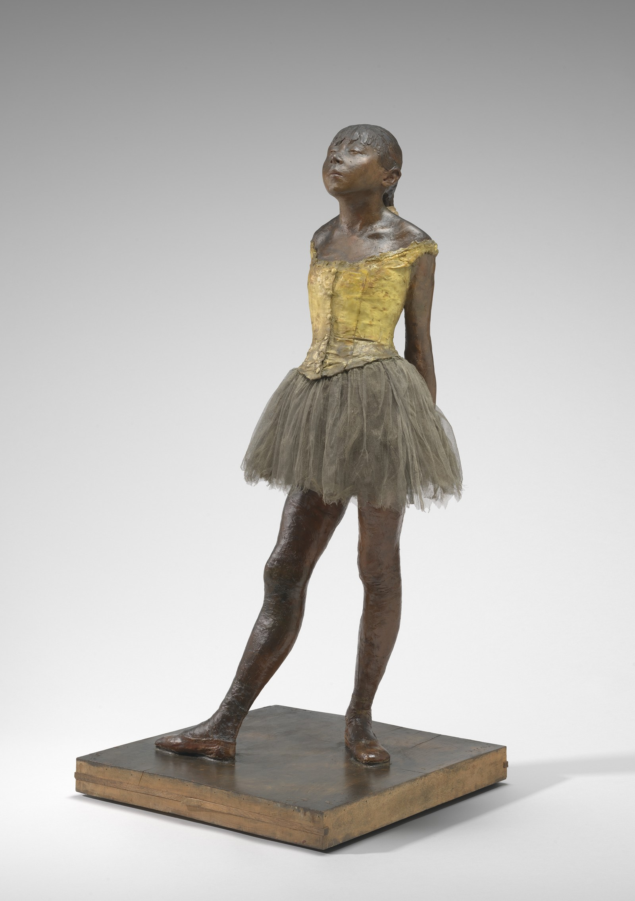
Little Dancer · NGA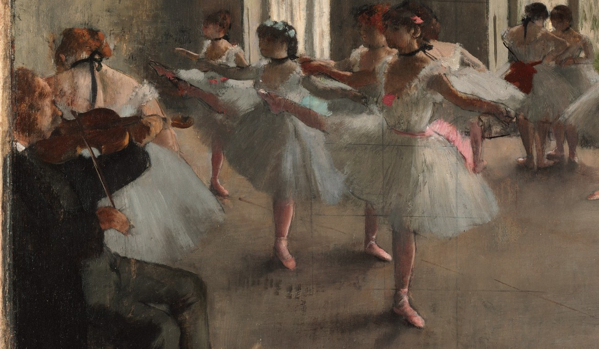
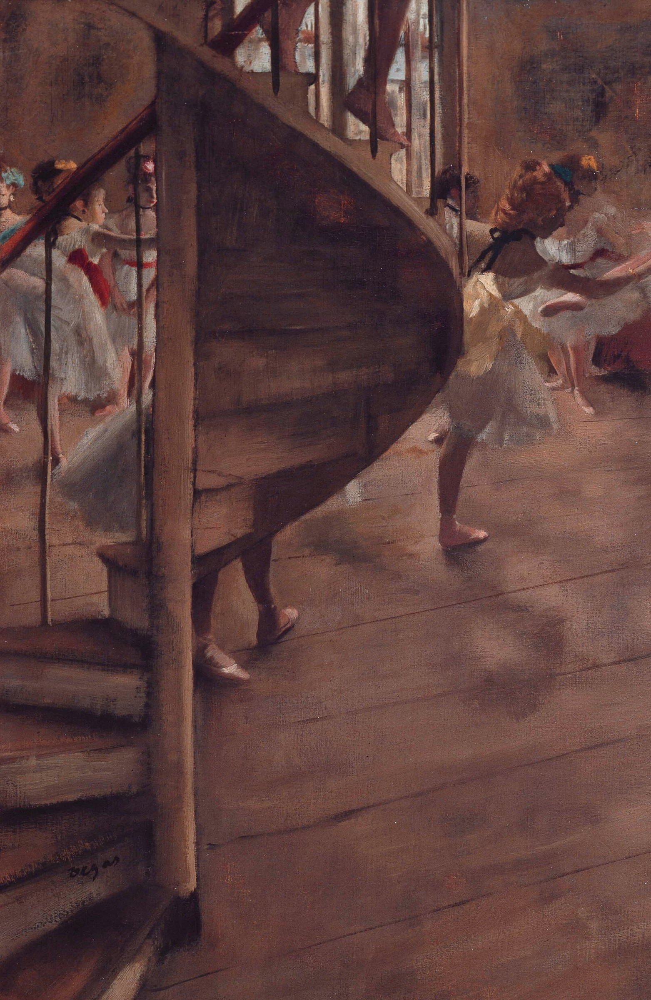
Harvard says Degas painted out a stairwell here. In his Glasgow version it survives: a spiral stair, legs descending, sliced by the frame like a snapshot.
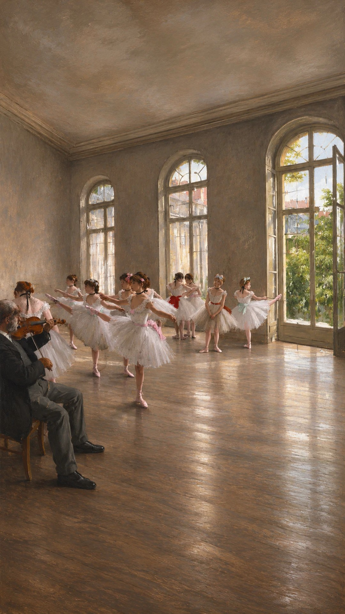
We flew a camera through this rehearsal room. Watch the film.